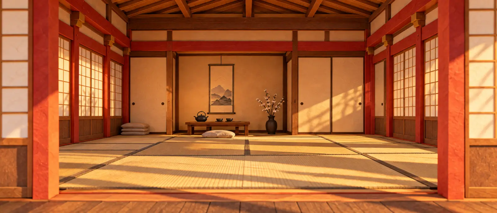

Katas for different kinds of thinking.
Code, chat, whiteboard or review: find the bug in a few lines and say why. Today's kata comes from the five-minute review katas. Junior, mid or senior, and the topics you choose, shape what you get.
Open source · Self-hosted · MIT
One surprise kata a day, about five minutes, no AI. Then the sensei, an LLM you configure, reviews your reasoning.
For yourself, your friends or your team. You run it, and you decide who gets in.
Running an instance needs Docker and a GitHub OAuth app. The playground needs no account and runs no kata.
01 / The practice
01 — Open
About five minutes, and you see the topic when it opens. Want longer? In Advanced you choose the type, language and time, up to 45 minutes, and get one kata.
02 — Think
Write code, find the bug, reason through a decision or sketch a system. Keep the assistant closed. The timer keeps running.
03 — Return
The sensei reviews your work and your reasoning. Read what held up, what you assumed and what to revisit.
What it replaces is not another product. It is reaching for the prompt first.
02 / Your reasoning matters
A kata gives the attempt a boundary: one problem, a running timer and an explanation that has to be your own. A verdict describes this attempt; it is not a score for you.
Nothing technical stops you from opening an assistant during a kata. Dojo trusts you, because the practice only works if you keep it.
async function notifyAll(users) {
users.forEach(async (u) => {
await send(u)
})
}Needs work
“What is the caller actually waiting for when this function returns?”
03 / Inside the dojo

Code, chat, whiteboard or review: find the bug in a few lines and say why. Today's kata comes from the five-minute review katas. Junior, mid or senior, and the topics you choose, shape what you get.
White to black, from completed katas, topic variety, active days and time at your rank. Every kata the sensei evaluates counts, whatever the verdict. A belt is not a certificate.
Read the belt rules ↗Learning apps that run inside Dojo, from any stack. The person who runs an instance registers them; your progress is saved by the instance.
How scrolls are authored ↗Drop in a snippet and run it. No kata, no verdict. Available when the operator turns it on.
Open the playground ↗04 / Make room for practice
MIT · Self-hosted
Configure the instance, start its services and load the katas. Needs Docker and a GitHub OAuth app.
Want to try a snippet first? Open the playground, without an account.
Contribute
Dojo has a point of view about practice, and the contributing guide protects it.
Read the contributing guide ↗